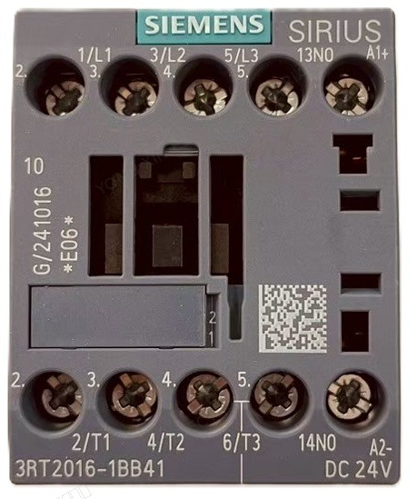
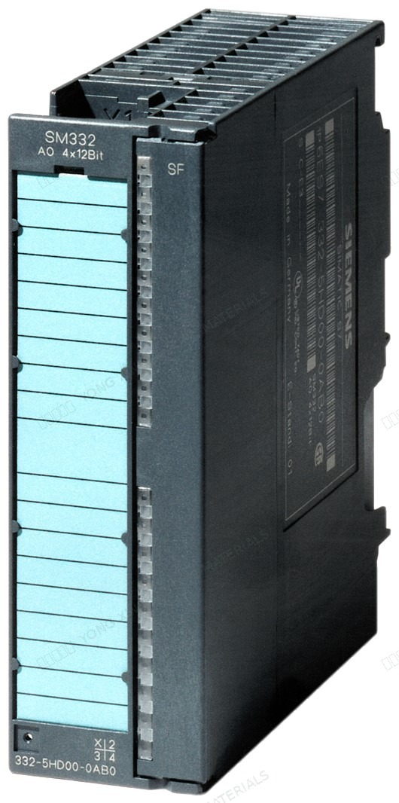
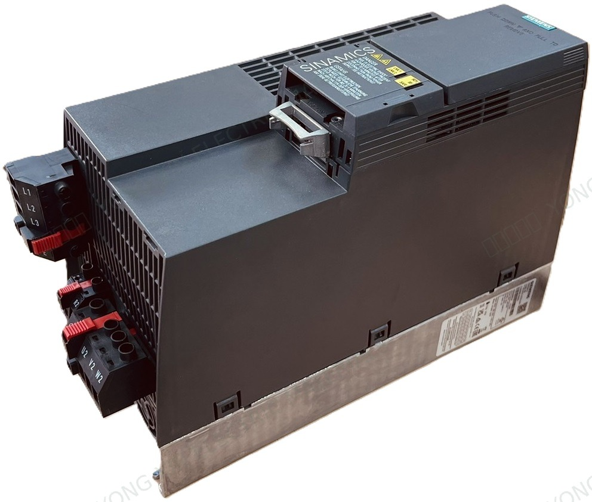

BRAND PRODUCT INDEX
西門子 SIEMENS
目前網站已建立西門子 SIRIUS 接觸器／輔助接點、5SY 迴路保護器、3RV 馬達保護器、SIMATIC PLC 模組與 SINAMICS 變頻器商品頁。頁面內容以本批實物照片與標示整理，不以相近型號推定未確認規格。
 11 個商品頁4 個系列分類
11 個商品頁4 個系列分類AVAILABLE PRODUCT SERIES
已建立商品系列

3 個商品頁西門子 SIEMENS
西門子 SIEMENS自動控制元件
3RT2 接觸器與 3RH 輔助接點。
查看系列與全部型號 →
5 個商品頁西門子 SIEMENS
西門子 SIEMENS配電與保護元件
5SY 迴路保護器、5ST 輔助接點與 3RV2 馬達保護器／附件。
查看系列與全部型號 →
2 個商品頁西門子 SIEMENS
西門子 SIEMENSPLC 與人機介面
SIMATIC S7-300 模擬輸出與計數器模組。
查看系列與全部型號 →
1 個商品頁西門子 SIEMENS
西門子 SIEMENS馬達驅動與變頻器
SINAMICS G120C 變頻器。
查看系列與全部型號 →品牌與供應說明
本頁僅整理永信電料行網站目前已建立的西門子商品頁，不代表完整原廠全系列、即時庫存或官方代理資格。實際供應與交期請依完整型號另行確認。